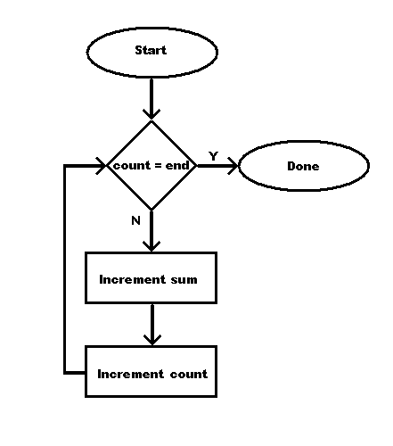

ACT-R Model Writing
This text and the corresponding texts in other units of the tutorial are included to help introduce cognitive modelers to the process of writing, testing, and debugging ACT-R models. Unlike the main tutorial units which cover the theory and use of ACT-R, these documents will cover issues related to using ACT-R from a software development perspective. They will focus mostly on how to use the tools provided to build and debug models, and will also describe some of the typical problems one may encounter in various situations and provide suggestions for how to deal with those issues.
Models are Programs
The important thing to note up front is that an ACT-R model is a program – it is a set of instructions which will be executed by the ACT-R software. There are many different methodologies which one can use when writing programs as well as different approaches to software testing which one can employ. These guides are not going to promote any specific approaches to either task. Instead, they will attempt to describe general techniques and the tools which one can use when working with ACT-R regardless of the programming and testing methods being used.
Learning to write ACT-R models is similar to learning a new programming language. However, ACT-R as a programming language differs significantly from most other languages and the objectives of writing a cognitive model are typically not the same things one tries to achieve in other programming tasks. Because of that, one of the difficulties that many beginning ACT-R modelers have is trying to treat writing an ACT-R model just like a programming task in any other programming language. Some of the important differences to keep in mind while modeling with ACT-R will be described in this section.
From a high level perspective, a significant difference between ACT-R and other programming languages is what will be running the program. The model is not being written as commands for a computer to execute, but as commands for a cognitive processor (essentially a simulated human mind) to perform. In addition to that, the operators available for use in writing the model are very low-level actions, much like assembly language in a computer programming language. Thus ACT-R is basically the opposite of most programming languages. It is a very low-level language written to run on a “processor” with many high-level capabilities built into it whereas most languages are a high-level set of operators targeting a very general low-level processor for execution.
Another important difference is how the sequence of actions is determined. In many programming languages the programmer specifies the commands to perform as a specific sequence of instructions with each one happening after the previous one, as written in the program. For ACT-R however the order of the productions in the model definition does not matter, nor does the order of the tests within an individual production matter. The next action to perform, i.e. which production to fire, is based on which one currently matches the current state of the buffers and modules, and that requires satisfying all of the conditions on the LHS of a production. Thus, the modeler is responsible for explicitly building the sequence of actions to take into the model because there is no automatic way to have the system iterate through them “in order”.
Finally, perhaps the biggest difference between writing a cognitive model and most other programming tasks is that for cognitive modeling one is typically attempting to simulate or predict human behavior and performance, and human performance is often not optimal or efficient from a computer programming perspective. Thus, optimizations and efficient design metrics which are important in normal programming tasks, like efficient algorithms, code reuse, minimal number of steps, etc, are not always good design choices for creating an ACT-R model because such models may not perform “like a person”. Instead, one has to consider the task from a human perspective and rely on psychological research and performance data to guide the design of the model.
ACT-R and Lisp
While ACT-R is its own modeling language, it is itself written in Lisp. ACT-R models are written using Lisp syntax (parentheses around a function call with the function name first followed by the parameters separated with spaces) and the ACT-R prompt is really just an interactive Lisp session. Because of that, some familiarity with Lisp programming can be helpful when working with ACT-R, but it is not absolutely required.
Errors and Warnings
When writing a model one is likely to encounter warnings from ACT-R and occasionally warnings and errors from the underlying Lisp. This section will provide some information on how to determine whether the problem was reported by ACT-R or the underlying Lisp and how to deal with those from the ACT-R command prompt in the standalone application version. This document is not going to describe how one would handle errors in other Lisp programs which may be used if one is running ACT-R from source code (presumably if you are comfortable enough to run ACT-R from sources you are already familiar with the software you are using to do so or can consult the appropriate documentation).
ACT-R Warnings
Warnings from ACT-R were seen when loading the semantic model as described in the primary text for this unit. They are an indication that there is a potentially problematic situation in the ACT-R model or code which is using ACT-R commands. An ACT-R warning may occur when the model is loaded and also while the model is being run. An ACT-R warning can be distinguished from a Lisp warning because the ACT-R warnings will always be printed inside of the Lisp “block comment” character sequence #| and |# and start with the word “Warning” followed by a colon. Here are some examples of ACT-R warnings:
#|Warning: Creating chunk STARTING with no slots |#
#|Warning: A retrieval event has been aborted by a new request |#
#|Warning: Production TEST already exists and it is being redefined. |#When you get a warning from ACT-R, the recommendation is to make sure that you read the warning and determine whether it is an issue which needs to be corrected or is simply an indication of something that is not significant to the operation of the model. Ideally, the model should not generate any warnings, but occasionally it is convenient to just ignore an inconsequential warning, particularly early on in the development of a model or task when the warning is being generated by something that you haven’t yet completed. However, you should be very careful when doing that because if you just start ignoring the warnings because you’re “expecting them” you may miss a new warning that occurs which indicates a significant problem. Something else to be careful about is that many ACT-R warnings are only displayed when the ACT-R trace is enabled. Thus, until you are certain that a model is performing correctly the recommendation is to leave the trace enabled, and if you encounter any problems while the model is running with the trace turned off, turning the trace back on may show the warnings that indicate the issue.
Some of the most common ACT-R warnings will be described in more detail in this and later units of the model writing texts. If you do not understand what a particular ACT-R warning means, then one thing you can do to find out more information is search the ACT-R reference manual to find an example with the same or similar warning (things specific to the model like chunk or production names found in the warning would of course have to be omitted in the search). That should help to narrow down which ACT-R command generated the warning and provide more details about it.
Lisp Warnings
Lisp warnings are similar to ACT-R warnings in that they are an indication that something unexpected or unusual was encountered which you may need to correct. You will typically only encounter Lisp warnings if you are building experiments or tasks in Lisp for the model. Here are some typical things that will generate a Lisp warning: defining functions that use undefined variables, defining variables in functions and then not using them, loading a file which redefines a function that was defined elsewhere, and defining functions that reference other functions which do not yet exist. A Lisp warning will typically be displayed after the prompt as a Lisp comment which starts with a semicolon. Because they do not cause the system to halt they are often easy to ignore, but as with ACT-R warnings, the recommendation is to read and understand every warning that is displayed when you load a model or task file. Here is an example of a warning displayed after loading a task file that contains a function named test which creates a variable called x, but does not use it:
;Compiler warnings :
; In TEST: Unused lexical variable X
TEST
?
Lisp Errors
An error is a serious condition that has occurred in Lisp and it will usually cause things to stop until it is resolved by the user. Typical things that will cause a Lisp error are missing or unbalanced parenthesis that result in invalid Lisp syntax in the model file, trying to use commands which do not exist, or calling commands with invalid or an incorrect number of arguments. When an error occurs you will see some details about the error in the ACT-R window and you should resolve that problem before continuing. Here is an example showing an error when trying to call the command run without specifying a time:
? (run)
debugger invoked on a SB-INT:SIMPLE-PROGRAM-ERROR @243A3B38 in thread
#<THREAD tid=8048 "main thread" RUNNING {1001178003}>:
invalid number of arguments: 0
Type HELP for debugger help, or (SB-EXT:EXIT) to exit from SBCL.
restarts (invokable by number or by possibly-abbreviated name):
0: [REPLACE-FUNCTION] Call a different function with the same arguments
1: [CALL-FORM ] Call a different form
2: [ABORT ] Exit debugger, returning to top level.
(RUN) [external]
source: (DEFUN RUN (RUN-TIME &OPTIONAL (REAL-TIME NIL))
(WITH-RUNNING-OR-DEFINING-LOCK "run"
:RUNNING
(IF (NOT (AND (NUMBERP RUN-TIME) (> RUN-TIME 0)))
(PRINT-WARNING
"run-time must be a number greater than zero.")
(LET ((MS-TIME #))
(FLET (#)
(MULTIPLE-VALUE-BIND # # # #))))))
0]
It starts with a description of the error, which may be a little cryptic if you are not familiar with Lisp, but typically should give some indication of what caused the problem. After that it provides some information on how one can handle the error, and then below that you will see that the input prompt has changed from a “?” to a number followed by a “]” character. The recommendation is to always resolve those errors before continuing, and usually it is best to just abort the error. In this case that would happen by entering 2 at the prompt (since that is listed as the ABORT restart in the description). Alternatively, you can also enter top instead which will also abort and return to the main prompt.
Debugging Example
To show the tools one can use to debug an ACT-R model and describe some of the issues one may encounter when working with ACT-R models we will work through the process of debugging a model which is included with the unit materials. We will start with a model for the task that does not work and then though testing and debugging determine the problems and fix them, showing the ACT-R tools which one can use along the way. This task is going to start the testing and debugging with essentially the whole model written. When writing your own models you may find it easier to perform incremental testing as you go instead of waiting until you have written everything, and the same tools and processes would be applicable then too.
For this unit we will work through a broken version of the addition by counting model which is in the broken-addition.lisp file (a working version of the model is found in the addition.lisp file). Before starting the debugging process however, we will first look at the overall design of this model because without knowing what it should do we cannot appropriately determine if it is or is not doing the correct thing.
Addition Model design
Before starting to write a model it is useful to start with some design for how you intend the model to work. It does not have to be a complete specification of every step the model will take, but should at least provide a plan for where it starts, the general process it will follow, and what the end condition and results are. As you write the model you may also find it useful to update the design with more details as you go. In that way you will always have a record of how the model works and what it is supposed to do. Below is design information for the addition model provided at increasing levels of detail.
Here is the very general description of the model. This model will add two numbers together by counting up from the first number (incrementally adding one) a number of times indicated by the second number. It does this by retrieving chunks from declarative memory that indicate the ordering of numbers from zero to ten and maintaining running totals for the sum and current count in slots of the goal buffer.
Based on that description we can expand that a little and create a simple flow chart to indicate the basic process the model will follow:

Another important thing to specify is the way that the information will be encoded for the model, and generally that will involve specifying chunk-types for the task. Here are the chunk-types which we will use for this model:
The number chunk-type will be used to create chunks which encode the sequencing of numbers by indicating the order for a pair of numbers with number preceding next:
(chunk-type number number next)The add chunk-type will be used to create chunks indicating the goal of adding two numbers and it contains slots for holding the two numbers, the final sum, and the running count as we progress through the additions:
(chunk-type add arg1 arg2 sum count)The design of a model should also indicate detailed information about the starting conditions and the expected end state for the model. Here are some details for those aspects of this task:
Start: the model will have a chunk in the goal buffer. That chunk will have the starting number in the arg1 slot, the number to add to it will be in the arg2 slot, and it will have no other slots.
End: when the model finishes, the value of the sum slot of the chunk in the goal buffer will be the result of adding the number in that chunk’s arg1 slot to the number in its arg2 slot.
For the model we’ve created for this task, we will also indicate specific details for what each of the productions we’ve written is supposed to do. Our model consist of four productions, each corresponding to a state in the flow chart above with the branching test encoded as conditions within the productions for the possible branch states of done and increment sum.
initialize-addition: (the start state) If the goal chunk has values in the arg1 and arg2 slots and does not have a sum slot then set the value of the sum slot to be the value of the arg1 slot, add a count slot with the value zero, and make a request to retrieve a chunk for the number in the arg1 slot.
terminate-addition: (the done state) If the goal has the value of the count slot equal to the value of the arg2 slot then stop the model, which will be done by removing the count slot from the goal chunk.
increment-sum: If the goal has a sum slot with a value and the value of the count slot is not equal to the value of the arg2 slot and we have retrieved a chunk for incrementing the current sum then update the sum slot to be the value from the next slot of that retrieved chunk and retrieve a chunk to increment the current count.
increment-count: If the goal has a sum and count and we have retrieved a chunk for incrementing the current count value then update the count slot to be the value from the next slot of that retrieved-chunk and retrieve a chunk to increment the current sum.
Now that we know what the model is supposed to do in detail, we can start testing what has been implemented thus far.
Loading the model
The first step is of course to load the model. However, when we do so we encounter a Lisp error. If the file is being loaded with the “Load ACT-R code” button on the Control Panel an “Error Loading” window will be displayed indicating an end of file occurred which will have some details that start like this (the output may vary in different versions of the standalone application):
Error #<SIMPLE-ERROR Error #<INPUT-ERROR-IN-LOAD READ error during LOAD:
end of file on #<SB-INT:FORM-TRACKING-STREAM for "file
...
If we load that using the load-act-r-model command in the ACT-R window we get an ACT-R warning which actually indicates that a Lisp error occurred, and the load-act-r-model command will automatically abort from the error returning to the standard prompt:
? (load-act-r-model "ACT-R:tutorial;unit1;broken-addition.lisp")
#|Warning: Error "Error #<SIMPLE-ERROR Error #<INPUT-ERROR-IN-LOAD READ error during LOAD:
end of file on #<SB-INT:FORM-TRACKING-STREAM for
...
|#
NIL
?
The full message may be a little difficult to read, but whenever an error message contains “end of file” it almost always means that there is a missing right parenthesis somewhere in the file, but some other possible causes could be an extra left parenthesis, a missing double-quote character, or an extra double-quote character. To fix this we will have to look at the file, find what is missing or doesn’t belong and correct it. If you are using an editor that has built in support for Lisp code, then it shouldn’t be too difficult to match parentheses or otherwise locate the issue, but if your editor does not have such capabilities then unfortunately it may be a difficult process to track down the problem. In this case, what we find is that the closing right parenthesis of the define-model call is missing at the bottom of the file. After adding that into the file and saving it we should try to load it again. The load should be successful now, but there are several more ACT-R warnings which we should investigate before trying to run it.
Initial ACT-R Warnings
Here are the warnings displayed when the model is loaded:
#|Warning: No production defined for (INITIALIZE-ADDITION =GOAL> ADD ARG1 =NUM1 ARG2 =NUM2 SUM NIL ==> =GOAL ISA ADD SUM =NUM1 COUNT ZERO +RETRIEVAL> ISA NUMBER NUMBER =NUM1). |#
#|Warning: Invalid syntax in (=GOAL> ADD ARG1 =NUM1 ARG2 =NUM2 SUM NIL) condition. |#
#|Warning: Cannot use nil as a slot name. |#
#|Warning: --- end of warnings for undefined production INITIALIZE-ADDITION --- |#
#|Warning: Production TERMINATE-ADDITION uses previously undefined slots (SUMM). |#
#|Warning: Production INCREMENT-SUM already exists and it is being redefined. |#
#|Warning: Productions test the SUMM slot in the GOAL buffer which is not requested or modified in any productions. |#
#|Warning: Productions test the ARG2 slot in the GOAL buffer which is not requested or modified in any productions. |#Whenever a model generates ACT-R warnings when it is loaded the next step one takes should be to understand why the model generated those warnings because there is no point in trying to run it unless you know what problems it may have right from the start. Sometimes the warnings indicate a situation that is acceptable to ignore, like the default chunk creation warnings shown in the unit 1 text for the semantic model, but often they indicate something more serious which must be corrected in the model before it will run as expected.
To determine what the warnings mean one should start reading them from the top down because sometimes there may be multiple warnings generated for a single issue. Productions in particular often generate several warnings when there is a problem with creating one. For this model, all of the warnings are related to production issues and we will look at them in detail here to help explain what they mean.
This first warning indicates that the definition of the initialize-addition production, which it shows in the warning, is not valid and thus it could not create that production:
#|Warning: No production defined for (INITIALIZE-ADDITION =GOAL> ADD ARG1 =NUM1 ARG2 =NUM2 SUM NIL ==> =GOAL ISA ADD SUM =NUM1 COUNT ZERO +RETRIEVAL> ISA NUMBER NUMBER =NUM1). |#Whenever there is a “No production defined” warning there will be more warnings after that which will provide the details about what specifically was wrong with the production. In this case this is the next warning:
#|Warning: Invalid syntax in (=GOAL> ADD ARG1 =NUM1 ARG2 =NUM2 SUM NIL) condition. |#
It’s telling us that there is something wrong with the =goal> test on the LHS, and the next warning provides additional details which may also help with that:
#|Warning: Cannot use nil as a slot name. |#
That is telling us that nil is in a slot name position of that =goal> condition and that nil is not a valid name for a slot.
The next warning displayed is just an indication that there are no more warnings about the problem in the initialize-addition production:
#|Warning: --- end of warnings for undefined production INITIALIZE-ADDITION --- |#
Before continuing to look at the rest of the warnings we will first understand what exactly lead to this sequence for the production. We know where the problem lies, the goal buffer test of the initialize-addition production, and the warning is telling us that it’s trying to interpret nil as a slot name, but it doesn’t tell us exactly why that is happening. We don’t intend nil to be a slot name so that means the problem is likely elsewhere in the goal condition. If you look at the production it may be obvious what is wrong, but here we will look at the condition as displayed in the warning:
#|Warning: Invalid syntax in (=GOAL> ADD ARG1 =NUM1 ARG2 =NUM2 SUM NIL) condition. |#The condition gets processed from left to right so we will look at it that way instead of focusing on the nil value which is indicated in the warning. After the buffer name, we see the first thing specified is add. That is not the name of a slot which we intend to use, but is the name of the chunk-type we are using to specify the goal chunk. However, to indicate the chunk-type for a condition we need to use the symbol isa, which is missing here. So the missing isa is likely the source of the problem. The warning doesn’t tell us that because having an isa is not required in a buffer test – it’s acceptable to only specify slots and values without indicating a chunk-type which is what happens here since there is no isa symbol. Thus it is parsing that condition as the add slot having a value of arg1, a slot named =num1 with a value arg2, a slot named =num2 with the value sum, and then a slot named nil which doesn’t have a value. Nil being invalid as a slot name is the first thing which the production detects as being a problem with that and thus that’s when it stops and produces the warning.
At this point one can either fix that problem and try loading it again or continue reading through the warnings. For the purposes of this text we are going to continue through all of the warnings first and then fix them afterwards, but you could also fix the problems one at a time, stopping here to fix the initialize-addition production and then reload and check the warnings at that point.
The next warning is this one:
#|Warning: Production TERMINATE-ADDITION uses previously undefined slots (SUMM). |#That indicates that the symbol summ occurs as a slot name in the production terminate-addition and that name wasn’t specified in any of the chunk-types as a slot name.
The following warning is telling us that there are multiple productions with the name increment-sum, and thus the earlier one is being overwritten by a later one:
#|Warning: Production INCREMENT-SUM already exists and it is being redefined. |#The last two warnings are what we call style warnings in the productions:
#|Warning: Productions test the SUMM slot in the GOAL buffer which is not requested or modified in any productions. |##|Warning: Productions test the ARG2 slot in the GOAL buffer which is not requested or modified in any productions. |#
They indicate that in one or more productions there is a goal buffer testing for slots named summ and arg2 but those slots do not appear in any of the productions’ actions. Style warnings describe a situation that exists among all the productions in the model and may point to an error in the logic of the productions or inconsistency in the usage of the chunk slots. However, since we have a production which was not defined and a previous warning about the slot summ, style warnings are not unexpected. Fixing those other issues may also eliminate the style warnings.
Now that we’ve looked over the warnings, some of them are things which need to be fixed before we can run the model and we will address them one at a time in the next section. One note before doing so however is to point out that occasionally the warnings may not be as easy to understand as these or they may reference ACT-R commands that don’t occur explicitly in the model. In those cases you may need to consult the ACT-R reference manual to find out more information.
Fixing initialize-addition
As described above, the issue is that we are missing the isa symbol from the goal condition. Here is the initialize-addition production from the model:
(P initialize-addition
=goal>
add
arg1 =num1
arg2 =num2
sum nil
==>
=goal
ISA add
sum =num1
count zero
+retrieval>
ISA number
number =num1
)If we add the missing isa to the goal condition like this:
(P initialize-addition
=goal>
isa add
arg1 =num1
arg2 =num2
sum nil
==>
=goal
ISA add
sum =num1
count zero
+retrieval>
ISA number
number =num1
)That should fix the problem. Alternatively, we could just remove add from the condition instead since the chunk-type is an optional declaration in a buffer test:
(P initialize-addition
=goal>
arg1 =num1
arg2 =num2
sum nil
==>
=goal
ISA add
sum =num1
count zero
+retrieval>
ISA number
number =num1
)Fixing terminate-addition
The last warning we have that’s not a style warning is this one:
#|Warning: Production TERMINATE-ADDITION uses previously undefined slots (SUMM). |#
Here is the text of the terminate-addition production from the model:
(P terminate-addition
=goal>
ISA add
count =num
arg2 =num2
summ =answer
==>
=goal>
ISA add
count nil
)This warning seems fairly straight forward. There was a typo in the condition of the production and the slot name summ was used instead of the correct name sum.
(P terminate-addition
=goal>
ISA add
count =num
arg2 =num2
sum =answer
==>
=goal>
ISA add
count nil
)Fixing increment-sum
Here is the warning about increment-sum:
#|Warning: Production INCREMENT-SUM already exists and it is being redefined. |#
In this case the problem is two productions with the same name. A simple approach would be to just change the name of one of them to clear the warning, but it is better to understand why we have two productions with the same name and then if both are indeed valid productions to name them correctly.
Comparing the productions in the model to the design of the task that we created it appears that the second instance of increment-sum is the correct version and that the first one should be increment-count. Something like that may have come about simply as a typo or perhaps by copying-and-pasting increment-sum, since the two productions are very similar, and then failing to change the name on that new one after making other changes to it. Whatever the cause, we will now change the name of the first one to increment-count.
Now that we’ve addressed those warnings we need to save the file and reload it.
More Warnings
When we load the model now we see another set of warnings:
#|Warning: No production defined for (INITIALIZE-ADDITION =GOAL> ISA ADD ARG1 =NUM1 ARG2 =NUM2 SUM NIL ==> =GOAL ISA ADD SUM =NUM1 COUNT ZERO +RETRIEVAL> ISA NUMBER NUMBER =NUM1). |#
#|Warning: First item on RHS is not a valid command |#
#|Warning: --- end of warnings for undefined production INITIALIZE-ADDITION --- |#
#|Warning: Productions test the ARG2 slot in the GOAL buffer which is not requested or modified in any productions. |#Again it is indicating problems with the initialize-addition production and we still have one of the style warnings. This is an important thing to note about production warnings. No matter how many problems may exist in a production, only one of them will generate warnings at a time because once a problem is detected no further processing of that production will occur. Thus it may take several iterations of addressing the warnings, fixing the production issues, and then reloading before all of the productions are syntactically correct.
This time the warning for initialize-addition indicates that there is a problem with the first action on the RHS of the production, and here again is our updated version of the production:
(P initialize-addition
=goal>
isa add
arg1 =num1
arg2 =num2
sum nil
==>
=goal
ISA add
sum =num1
count zero
+retrieval>
ISA number
number =num1
)Looking at that closely, we can see that there is a missing “>” symbol at the end of the goal modification action above. We will add that, save the model, and load it yet again.
Still Have Style Warnings
There are still some style warnings displayed when we load the model:
#|Warning: Productions test the ARG1 slot in the GOAL buffer which is not requested or modified in any productions. |#
#|Warning: Productions test the ARG2 slot in the GOAL buffer which is not requested or modified in any productions. |#We could try to address those now, but since all of the productions are at least defined we will temporarily ignore them and see what happens when we try to run the model. It may be that these are safe to ignore, and since understanding them may require investigating all of the productions to determine what is wrong we will just try a quick test of the model at this point and then come back to understanding and fixing them later, if necessary.
Testing
When testing a model one of the important issues is generating meaningful tests, and the design of the model is useful in determining what sorts of things to test. The tests should cover a variety of possible input values to make sure the model is capable of handling all the types of input it is expected to be able to handle. Similarly, tests should be done to make sure that all of the components of the model operate as intended. Thus, if the model has different strategies or choices it can make there should be enough tests to make sure that all of those strategies operate successfully. Similarly, if the model is designed to be capable of detecting and/or correcting for invalid values or unexpected situations one will also want to test a variety of those as well. While it is typically not feasible to test all possible situations, one should test enough of them to feel confident that the model is capable of performing correctly before trying to use it to generate data from performing a task.
Because this model does not have any different strategies or choices nor is it designed to be able to deal with unexpected situations we only really need to generate tests for valid inputs, which are addition problems of non-negative numbers with sums between zero and ten. Because that is not an extremely large set of options (only 66 possible problems) one could conceivably test all of them, particularly if some task code was written to generate and verify them automatically, but being able to enumerate all the possible cases is not usually feasible. Thus, we will treat this as one would a more general task and generate some meaningful test cases to run explicitly instead of trying to automate it.
One way to generate tests would be to just randomly pick a bunch of different addition problems, but a more systematic approach is usually much more useful. When dealing with a known range of possible values, a good place to start is to test values at the beginning and end of the possible range, and starting with what seems to be the easiest case is usually a good start. Thus, our first test will be to see if the model can correctly add 0+0.
The First Run
To do that, we need to create a chunk to place into the goal buffer with those values in it. The model as given already has such a chunk created called test-goal found along with the other chunks created for declarative memory:
(test-goal ISA add arg1 zero arg2 zero)So, at this point it might seem like a good time to try to run the model, and here is what we get when we do:
? (run 10)
0.000 PROCEDURAL CONFLICT-RESOLUTION
0.000 ------ Stopped because no events left to processNothing happened. While it may be obvious to you why this model did not do anything at this point, we are still going to walk through the steps that one can take to figure that out. The first step in figuring that out is to determine what you expect should have happened, and having a thorough design can be helpful with that. In this case what should have happened is that the initialize-addition production should fire to start the model along the task.
When one expects a production to fire and it does not, the ACT-R tool that can be used to determine the reason is the whynot command because that will explain why a production did not match the current context. That tool is accessible either by calling the command at the prompt, or through the procedural viewer in the ACT-R Environment. When using the whynot command one can provide any number of production names along with it (including none). For each of the productions provided it will print out a line indicating whether the production matches or not, and then either the current instantiation of the production if it does match the current context or the production itself along with a reason why it does not match. If no production names are provided then the whynot information will be reported for all productions. To use the tool in the procedural viewer one must highlight a production in the list of productions on the left of the window and then press the button labeled “Why not?” on the top left. That will open another window which will contain the same information as is displayed by the whynot command.
Because the model stopped at the time when we expected that production to be selected we can use the whynot tool now and find out why it did not fire in the current model state. Here are the results of calling the whynot command for initialize-addition:
? (whynot initialize-addition)
Production INITIALIZE-ADDITION does NOT match.
(P INITIALIZE-ADDITION
=GOAL>
ARG1 =NUM1
ARG2 =NUM2
SUM NIL
==>
=GOAL>
SUM =NUM1
COUNT ZERO
+RETRIEVAL>
NUMBER =NUM1
)
It fails because:
The GOAL buffer is empty.It did not fire because the goal buffer is empty. Looking at our model we can see that the goal buffer is empty because we do not call the goal-focus command. Instead of adding a chunk with the goal we wanted into the model’s declarative memory using add-dm, it should have been specified with the goal-focus command (which does not include providing a name for the chunk). So, that chunk description should be removed from add-dm, and instead used with goal-focus:
(goal-focus (ISA add arg1 zero arg2 zero))
We could try calling that from the command prompt and then running the model again, but it’s probably best to update the file now, save it, and then reload.
When we load it we see that the style warnings no longer appear. Setting an initial goal removed the problem that was being indicated – the model was testing for slots in a goal buffer chunk which weren’t being set by the productions. By putting a chunk with those slots into the buffer when the model is defined the warnings go away. If we had not skipped over the style warnings we may have been able to determine that setting a goal chunk was necessary prior to running it.
The Second Run
Here is what happens when we run it now:
? (run 10)
0.000 GOAL SET-BUFFER-CHUNK GOAL (ISA ADD ARG1 ZERO ARG2 ZERO) NIL
0.000 PROCEDURAL CONFLICT-RESOLUTION
0.050 PROCEDURAL PRODUCTION-FIRED INITIALIZE-ADDITION
0.050 PROCEDURAL CLEAR-BUFFER RETRIEVAL
0.050 DECLARATIVE start-retrieval
0.050 PROCEDURAL CONFLICT-RESOLUTION
0.100 DECLARATIVE RETRIEVED-CHUNK ZERO
0.100 DECLARATIVE SET-BUFFER-CHUNK RETRIEVAL ZERO
0.100 PROCEDURAL PRODUCTION-FIRED TERMINATE-ADDITION
0.100 PROCEDURAL CONFLICT-RESOLUTION
0.100 ------ Stopped because no events left to processLooking at that trace, it has fired the productions we would expect from our design. First it initializes the addition process, and then it terminates because we have counted all of the numbers that it needed (which is none). The next thing to check is to make sure that it performed the changes to the goal buffer chunk as intended to create the appropriate result.
To check the chunk in the goal buffer we can use either the buffer-chunk command from the prompt or the buffers tool in the ACT-R Environment. For the command, any number of buffer names can be provided (including none). For each buffer provided it will print out the buffer name, the name of the chunk in the buffer, and then print the details for that chunk. If no buffer names are provided then for every buffer in ACT-R it will print the name of the buffer along with the name of the chunk currently in that buffer. To use the buffers tool one can select a buffer from the list on the left of the window and then the details as would be printed by the buffer-chunk command for that buffer will be shown on the right. One may open multiple buffers windows if desired, which can be useful when comparing the contents of different buffers.
Here is the output from the buffer-chunk command for the goal buffer:
? (buffer-chunk goal)
GOAL: GOAL-CHUNK0
GOAL-CHUNK0
ARG1 ZERO
ARG2 ZERO
SUM ZERO
There we see that the sum slot has the value 0 which is what we expect for 0+0. The model has worked successfully for this test. However, that was a very simple case and we do not yet know if it will actually work when there is counting required, or in fact if it can add zero to other numbers correctly. Thus, we need to perform more tests before we can consider the model to be finished.
Next Test
For the next test it seems reasonable to verify that it can also add 0 to some other number since that does not involve any more productions than the last test and would be good to know before trying any more involved tasks. To do that we will try the problem 1+0 and to do so we need to change the arg1 value of the goal chunk from 0 to 1 like this in the model:
(goal-focus (ISA add arg1 one arg2 zero))
We need to then save that change and reload the model. Now we will run it again and here is the result of the run and the chunk from the goal buffer:
? (run 10)
0.000 GOAL SET-BUFFER-CHUNK GOAL (ISA ADD ARG1 ONE ARG2 ZERO) NIL
0.000 PROCEDURAL CONFLICT-RESOLUTION
0.050 PROCEDURAL PRODUCTION-FIRED INITIALIZE-ADDITION
0.050 PROCEDURAL CLEAR-BUFFER RETRIEVAL
0.050 DECLARATIVE start-retrieval
0.050 PROCEDURAL CONFLICT-RESOLUTION
0.100 DECLARATIVE RETRIEVED-CHUNK ONE
0.100 DECLARATIVE SET-BUFFER-CHUNK RETRIEVAL ONE
0.100 PROCEDURAL PRODUCTION-FIRED TERMINATE-ADDITION
0.100 PROCEDURAL CONFLICT-RESOLUTION
0.100 ------ Stopped because no events left to process? (buffer-chunk goal)
GOAL: GOAL-CHUNK0
GOAL-CHUNK0
ARG1 ONE
ARG2 ZERO
SUM ONE
The result is as we would expect so now it seems reasonable to move on to a test which requires actually adding numbers.
Test with Addition
Since this is the first test of performing an addition we should again create a simple test, and adding 1+1 seems like a good first step since we know the model can add 0+0 and 1+0 correctly. To do that we again change the initial goal chunk, save and load the model.
(goal-focus (ISA add arg1 one arg2 one))
Before running it, it would be a good idea to make sure we know what to expect. Given the model design above, we expect to see four productions fire in this order: initialize-addition to get things started, increment-sum to add the first number, increment-count to update the count value, and then terminate-addition since our count will then be equal to 1.
Here is what we get when we run it:
? (run 10)
0.000 GOAL SET-BUFFER-CHUNK GOAL (ISA ADD ARG1 ONE ARG2 ONE) NIL
0.000 PROCEDURAL CONFLICT-RESOLUTION
0.050 PROCEDURAL PRODUCTION-FIRED INITIALIZE-ADDITION
0.050 PROCEDURAL CLEAR-BUFFER RETRIEVAL
0.050 DECLARATIVE start-retrieval
0.050 PROCEDURAL CONFLICT-RESOLUTION
0.100 DECLARATIVE RETRIEVED-CHUNK ONE
0.100 DECLARATIVE SET-BUFFER-CHUNK RETRIEVAL ONE
0.100 PROCEDURAL PRODUCTION-FIRED TERMINATE-ADDITION
0.100 PROCEDURAL CONFLICT-RESOLUTION
0.100 ------ Stopped because no events left to processIt does not do what we expected it to do. The first production fired as we would expect, but then instead of the increment-sum production firing the terminate-addition production fired and stopped the process just as it did when the model was adding 0. Now we have to determine what caused that problem, and the first step towards doing that is determining when in the model run the first problem occurred.
Typically, the first thing to do is to look at the trace and compare it to the actions we would expect to happen. When doing that it is often helpful to have more detail in the trace so that we see all of the actions that occur in the model. Thus, we would want to set the :trace-detail parameter to high in the model, save it, load it, and then run it again.
(sgp :trace-detail high :esc t :lf .05)
Here is the trace with the detail level set to high:
? (run 10)
0.000 GOAL SET-BUFFER-CHUNK GOAL (ISA ADD ARG1 ONE ARG2 ONE) NIL
0.000 PROCEDURAL CONFLICT-RESOLUTION
0.000 PROCEDURAL PRODUCTION-SELECTED INITIALIZE-ADDITION
0.000 PROCEDURAL BUFFER-READ-ACTION GOAL
0.050 PROCEDURAL PRODUCTION-FIRED INITIALIZE-ADDITION
0.050 PROCEDURAL MOD-BUFFER-CHUNK GOAL
0.050 PROCEDURAL MODULE-REQUEST RETRIEVAL
0.050 PROCEDURAL CLEAR-BUFFER RETRIEVAL
0.050 DECLARATIVE start-retrieval
0.050 PROCEDURAL CONFLICT-RESOLUTION
0.050 PROCEDURAL PRODUCTION-SELECTED TERMINATE-ADDITION
0.050 PROCEDURAL BUFFER-READ-ACTION GOAL
0.100 DECLARATIVE RETRIEVED-CHUNK ONE
0.100 DECLARATIVE SET-BUFFER-CHUNK RETRIEVAL ONE
0.100 PROCEDURAL PRODUCTION-FIRED TERMINATE-ADDITION
0.100 PROCEDURAL MOD-BUFFER-CHUNK GOAL
0.100 PROCEDURAL CONFLICT-RESOLUTION
0.100 ------ Stopped because no events left to processReading through that trace the first thing that seems wrong is the selection of terminate-addition at time 0.050 (which doesn’t show up in the trace with the default trace-detail level). So, that is where we will investigate further to determine why the problem occurred. With more complicated models, reading through the trace may not provide quite as definitive an answer, because there could be situations where everything appears to go as expected but the model still generates a wrong result. In those cases, it may be necessary to add even more detail to the trace by putting !output! actions into the productions to display additional information or to walk through the model one event at a time using the stepper tool of the ACT-R Environment (as we will discuss later) and inspect the buffer contents and module states along the way.
Now that we know the problem seems to be at time 0.050 with the selection of the terminate-addition production the next step is figuring out why it is selected at that time. One could start by just looking at the model code and trying to determine why that may have happened, but for the purposes of this exercise we will do a more thorough investigation using the stepper tool because often one will need to see more information about the current state of the system at that time to determine the problem. [If one does not want to use the stepper tool in the ACT-R Environment there is also a run-step command which can be called instead of the run command we have been using, and it will allow you to step through things at the prompt, but we will not describe the use of that here and you should consult the ACT-R reference manual for details on using that command.] To use the stepper tool it should be opened before running the model (it can be opened while a model is running but it is best to open it in advance so that one does not miss the early events that occur), and then when the model is run the stepper will stop the system before every event that will be displayed in the trace (thus the trace-detail setting also controls how detailed the stepping is with the stepper tool). While the stepper has the model paused, it will show the action that will happen next near the top of the stepper display and for some actions it will also show additional details in the windows below that after they occur. When the stepper has the system paused, all of the other Environment tools can still be used to inspect the components of the system. Now that we have an idea where the problem occurs we want to get the model to that point and investigate further. So, we should reset the model, open the stepper tool, and then run the model.
To get to the event we are interested in, the production selection at time 0.050 seconds, one could just continually hit the step button until that action is the next one. For this model, since there are not that many actions, that would not be difficult. However, if the problem occurs much later into a run, that may not be a feasible solution. In those situations one will want to take advantage of the “Run Until:” button in the stepper. That can be used to run the model up to a specific time, until a specific production is selected or fired, or there is an event generated by a specified module. To select which type of action to run until one must select it using the menu button to the right of the “Run Until:” button, and then one must provide the details of when to stop (a time, production name, or module name) in the entry to the right of that button. For this task, since we are interested in the selection of a production we can use the run until button to make that easier. Thus, we should select production from the menu button, type terminate-addition in the entry box, and then press the “Run Until:” button. Doing that we see the trace printed out up to that point and the stepper now shows that selection is the next event. Our design for this production is that it should stop the model when there is a sum and the count is equal to the second argument, or specifically when the count slot of the chunk in the goal buffer is the same as the arg2 slot of the chunk in the goal buffer. If we look at the chunk in the goal buffer at this time we see that those values are not the same:
GOAL: GOAL-CHUNK0
GOAL-CHUNK0
ARG1 ONE
ARG2 ONE
SUM ONE
COUNT ZERO
Thus there is likely something wrong with the terminate-addition production. We can look at that production in the model file, open a procedural inspector to look at it, or take one step in the stepper to perform that selection and see the details in the stepper. However you choose to look at it, what you should find is that it is binding three different variables to the slots being tested and it is not actually comparing any of them:
(P terminate-addition
=goal>
ISA add
count =num
arg2 =num2
sum =answer
==>
=goal>
ISA add
count nil
)So we need to change that so it does the comparison correctly, which means using the same variable for both the count and arg2 tests. If we change the arg2 test to also use =num that should fix the problem. So we should close the stepper, make that change to the model file, save it, reload it, and they try running it again. Of course, we did not necessarily need to go through all of those steps to locate and determine what was wrong because we may have been able to figure that out just from reading the model file, but that is not always the case, particularly for larger and more complex models, so knowing how to work through that process is an important skill to learn.
Before reloading the model, we might also want to change the trace detail level down from high so that it is easier to check if the model does what we expect. Setting it to low will give us a minimal trace, but that should still be sufficient since it will show all the productions that fire. After making that change as well and then reloading here is what the model does when we run it:
? (run 1)
0.000 GOAL SET-BUFFER-CHUNK GOAL (ISA ADD ARG1 ONE ARG2 ONE) NIL
0.050 PROCEDURAL PRODUCTION-FIRED INITIALIZE-ADDITION
0.100 DECLARATIVE SET-BUFFER-CHUNK RETRIEVAL ONE
0.150 PROCEDURAL PRODUCTION-FIRED INCREMENT-SUM
0.200 DECLARATIVE SET-BUFFER-CHUNK RETRIEVAL ZERO
0.250 PROCEDURAL PRODUCTION-FIRED INCREMENT-SUM
0.300 DECLARATIVE SET-BUFFER-CHUNK RETRIEVAL ZERO
0.350 PROCEDURAL PRODUCTION-FIRED INCREMENT-SUM
0.400 DECLARATIVE SET-BUFFER-CHUNK RETRIEVAL ZERO
0.450 PROCEDURAL PRODUCTION-FIRED INCREMENT-SUM
0.500 DECLARATIVE SET-BUFFER-CHUNK RETRIEVAL ZERO
0.550 PROCEDURAL PRODUCTION-FIRED INCREMENT-SUM
0.600 DECLARATIVE SET-BUFFER-CHUNK RETRIEVAL ZERO
0.650 PROCEDURAL PRODUCTION-FIRED INCREMENT-SUM
0.700 DECLARATIVE SET-BUFFER-CHUNK RETRIEVAL ZERO
0.750 PROCEDURAL PRODUCTION-FIRED INCREMENT-SUM
0.800 DECLARATIVE SET-BUFFER-CHUNK RETRIEVAL ZERO
0.850 PROCEDURAL PRODUCTION-FIRED INCREMENT-SUM
0.900 DECLARATIVE SET-BUFFER-CHUNK RETRIEVAL ZERO
0.950 PROCEDURAL PRODUCTION-FIRED INCREMENT-SUM
1.000 DECLARATIVE SET-BUFFER-CHUNK RETRIEVAL ZERO
1.000 ------ Stopped because time limit reachedNow we have a problem where the increment-sum production fires repeatedly. Again, one could immediately start looking at the model code to try to determine what is wrong, but here we will work through a more rigorous process of stepping through the task and using the diagnostic tools that are available.
As before, the first step should be to turn the trace detail back to high so that we can see all of the details. We can run it now and look at the trace, but we don’t need all 10 seconds worth since the problem occurs well before the first second is over. So, we will only run the model up to time 0.300 since that is after the first repeat of increment-sum which we know to be a problem:
? (run .3)
0.000 GOAL SET-BUFFER-CHUNK GOAL (ISA ADD ARG1 ONE ARG2 ONE) NIL
0.000 PROCEDURAL CONFLICT-RESOLUTION
0.000 PROCEDURAL PRODUCTION-SELECTED INITIALIZE-ADDITION
0.000 PROCEDURAL BUFFER-READ-ACTION GOAL
0.050 PROCEDURAL PRODUCTION-FIRED INITIALIZE-ADDITION
0.050 PROCEDURAL MOD-BUFFER-CHUNK GOAL
0.050 PROCEDURAL MODULE-REQUEST RETRIEVAL
0.050 PROCEDURAL CLEAR-BUFFER RETRIEVAL
0.050 DECLARATIVE start-retrieval
0.050 PROCEDURAL CONFLICT-RESOLUTION
0.100 DECLARATIVE RETRIEVED-CHUNK ONE
0.100 DECLARATIVE SET-BUFFER-CHUNK RETRIEVAL ONE
0.100 PROCEDURAL CONFLICT-RESOLUTION
0.100 PROCEDURAL PRODUCTION-SELECTED INCREMENT-SUM
0.100 PROCEDURAL BUFFER-READ-ACTION GOAL
0.100 PROCEDURAL BUFFER-READ-ACTION RETRIEVAL
0.150 PROCEDURAL PRODUCTION-FIRED INCREMENT-SUM
0.150 PROCEDURAL MOD-BUFFER-CHUNK GOAL
0.150 PROCEDURAL MODULE-REQUEST RETRIEVAL
0.150 PROCEDURAL CLEAR-BUFFER RETRIEVAL
0.150 DECLARATIVE start-retrieval
0.150 PROCEDURAL CONFLICT-RESOLUTION
0.200 DECLARATIVE RETRIEVED-CHUNK ZERO
0.200 DECLARATIVE SET-BUFFER-CHUNK RETRIEVAL ZERO
0.200 PROCEDURAL CONFLICT-RESOLUTION
0.200 PROCEDURAL PRODUCTION-SELECTED INCREMENT-SUM
0.200 PROCEDURAL BUFFER-READ-ACTION GOAL
0.200 PROCEDURAL BUFFER-READ-ACTION RETRIEVAL
0.250 PROCEDURAL PRODUCTION-FIRED INCREMENT-SUM
0.250 PROCEDURAL MOD-BUFFER-CHUNK GOAL
0.250 PROCEDURAL MODULE-REQUEST RETRIEVAL
0.250 PROCEDURAL CLEAR-BUFFER RETRIEVAL
0.250 DECLARATIVE start-retrieval
0.250 PROCEDURAL CONFLICT-RESOLUTION
0.300 DECLARATIVE RETRIEVED-CHUNK ZERO
0.300 DECLARATIVE SET-BUFFER-CHUNK RETRIEVAL ZERO
0.300 PROCEDURAL CONFLICT-RESOLUTION
0.300 PROCEDURAL PRODUCTION-SELECTED INCREMENT-SUM
0.300 PROCEDURAL BUFFER-READ-ACTION GOAL
0.300 PROCEDURAL BUFFER-READ-ACTION RETRIEVAL
0.300 ------ Stopped because time limit reachedAs with the last problem, here again the issue looks to be an incorrect production selection since we expect increment-count to follow increment-sum. Thus, it is the selection at time 0.200 which seems to be in error. That is where we will investigate further using the stepper.
To do so we need to reset the model, open the stepper, and then run it again for at least 0.200 seconds. Again, we could use step to advance to where the problem is, but here again the run until button provides us with shortcuts because we can either advance to the selection of increment-sum or directly to the time we are interested in. This time, we will use the time option to skip ahead to the time at which we notice the problem.
Select time as the run until option using the menu button and enter 0.2 in the entry box. Then press “Run Until:” to skip to the first event which occurs at that time. The event we are interested in is not that first event at that time, so we now need to hit the step button a few times to get to the production-selected event at time 0.200. Looking at the details of the production-selected event in the stepper there are actually two things worth noting. The first is of course that increment-sum is selected which we do not want, and the other is that increment-count is not listed under the “Possible Productions” section which lists all of the productions which matched the state and could possibly have been be selected. Thus, while we would expect it to be selected now it did not actually match the current state. Both of those issues will need to be fixed, but first we will correct the issue with increment-sum since that seems more important – there is no point in trying to fix increment-count if increment-sum is still going to fire continuously.
Again, here is where having a thorough design for the model will help us figure out what the problem is since we can compare the production as written to what we intend it to do, but sometimes, particularly while learning how to model with ACT-R, you may not have considered all the possible details in the initial design. Thus, you may have to figure out why the production does not work and adjust your design as well when encountering a problem. Here we will look more at the production itself along with the high-level design instead of just looking at our detailed design specification. The first thing to realize is that since the production is firing again after itself, that means that either its action is not changing the state of the buffers and modules thus it will continue to match or that its condition is not sensitive to any changes which it makes thus allowing it to continuously match (and of course it is also possible that both of those are true). Here is the production from the model for reference:
(P increment-sum
=goal>
ISA add
sum =sum
count =count
- arg2 =count
=retrieval>
ISA number
next =newsum
==>
=goal>
ISA add
sum =newsum
+retrieval>
ISA number
number =count
)We will start by looking at the action of the production. It modifies the sum slot of the goal to be the next value based on the retrieved chunk, and it requests a retrieval for the chunk corresponding to the current count so that it can be incremented. Those seem to be the correct actions to take for this production and do result in a change to the state of the buffers. Those actions show up in the high detail trace when the model runs, and if we are really concerned we could also step through those actions with the stepper and inspect the buffer contents, but that does not seem necessary at this point. Now we should look at the condition of the production, keeping in mind the changes that its action makes because testing those appropriately is what the production is apparently missing. Looking at the condition of this production we see that it tests the sum slot, which is what gets changed in the action, but it is not actually using that value for anything. Thus, as long as there is any value in that slot this production will fire. Similarly, in the retrieval buffer test of this production there are no constraints on what the chunk in the buffer should look like, only that it have a value in the next slot. The only real constraint specified in the condition of this production is that the count slot’s value does not match the arg2 slot’s value. Thus, we will have to change something in the condition of this production so that it does not fire again after itself.
Considering our high-level design, it is supposed to fire to increment the sum. Thus, it should only fire when we have retrieved a fact which relates to the sum, but it does not have such a constraint currently. So, we need to add something to it so that it only fires when the retrieved chunk is relevant to the current sum. Given the way the number chunks are set up, what we need to test is that the value in the number slot of the chunk in the retrieval buffer matches the value in the sum slot of the chunk in the goal buffer. Adding that constraint to the production like this:
(P increment-sum
=goal>
ISA add
sum =sum
count =count
- arg2 =count
=retrieval>
ISA number
number =sum
next =newsum
==>
=goal>
ISA add
sum =newsum
+retrieval>
ISA number
number =count
)seems like the right thing to do, and we can now save, load, and retest the model.
Here is the trace we get now:
? (run 10)
0.000 GOAL SET-BUFFER-CHUNK GOAL (ISA ADD ARG1 ONE ARG2 ONE) NIL
0.000 PROCEDURAL CONFLICT-RESOLUTION
0.000 PROCEDURAL PRODUCTION-SELECTED INITIALIZE-ADDITION
0.000 PROCEDURAL BUFFER-READ-ACTION GOAL
0.050 PROCEDURAL PRODUCTION-FIRED INITIALIZE-ADDITION
0.050 PROCEDURAL MOD-BUFFER-CHUNK GOAL
0.050 PROCEDURAL MODULE-REQUEST RETRIEVAL
0.050 PROCEDURAL CLEAR-BUFFER RETRIEVAL
0.050 DECLARATIVE start-retrieval
0.050 PROCEDURAL CONFLICT-RESOLUTION
0.100 DECLARATIVE RETRIEVED-CHUNK ONE
0.100 DECLARATIVE SET-BUFFER-CHUNK RETRIEVAL ONE
0.100 PROCEDURAL CONFLICT-RESOLUTION
0.100 PROCEDURAL PRODUCTION-SELECTED INCREMENT-SUM
0.100 PROCEDURAL BUFFER-READ-ACTION GOAL
0.100 PROCEDURAL BUFFER-READ-ACTION RETRIEVAL
0.150 PROCEDURAL PRODUCTION-FIRED INCREMENT-SUM
0.150 PROCEDURAL MOD-BUFFER-CHUNK GOAL
0.150 PROCEDURAL MODULE-REQUEST RETRIEVAL
0.150 PROCEDURAL CLEAR-BUFFER RETRIEVAL
0.150 DECLARATIVE start-retrieval
0.150 PROCEDURAL CONFLICT-RESOLUTION
0.200 DECLARATIVE RETRIEVED-CHUNK ZERO
0.200 DECLARATIVE SET-BUFFER-CHUNK RETRIEVAL ZERO
0.200 PROCEDURAL CONFLICT-RESOLUTION
0.200 ------ Stopped because no events left to processIt does not have increment-sum selected and firing again after the first time. So, now we need to determine why increment-count, which we expect to be selected now, is not. Since the model has already stopped where we expect increment-count to be selected we do not need the stepper to get us to that point. All we need to do now is determine why it is not being selected, and to do that we will use the whynot tool again, either from the command prompt or in the procedural viewer. Here is what we get from calling the whynot command for increment-count:
? (whynot increment-count)
Production INCREMENT-COUNT does NOT match.
(P INCREMENT-COUNT
=GOAL>
SUM =SUM
COUNT =COUNT
=RETRIEVAL>
NUMBER =SUM
NEXT =NEWCOUNT
==>
=GOAL>
COUNT =NEWCOUNT
+RETRIEVAL>
NUMBER =SUM
)
It fails because:
The value in the NUMBER slot of the chunk in the RETRIEVAL buffer does not satisfy the constraints.It tells us that it does not match and that one reason for that is because of a mismatch on the number slot of the chunk in the retrieval buffer. Looking at the production it shows, the production’s constraint on the number slot is that its value must match the value of the sum slot of the chunk in the goal buffer. Here are the chunks in the goal and retrieval buffers:
? (buffer-chunk goal retrieval)
GOAL: GOAL-CHUNK0
GOAL-CHUNK0
ARG1 ONE
ARG2 ONE
SUM TWO
COUNT ZERO
RETRIEVAL: RETRIEVAL-CHUNK0 [ZERO]
RETRIEVAL-CHUNK0
NUMBER ZERO
NEXT ONE
Looking at that, it is indeed true that they do not match. Notice however that the number slot’s value from the retrieval buffer does match the count slot’s value in the goal buffer. Given that this production is trying to increment the count, that is probably what we should be checking instead in this production i.e. that we have retrieved a chunk relevant to the current count. Thus, if we change the production to test the count slot’s value instead it might fix the problem:
(P increment-count
=goal>
ISA add
sum =sum
count =count
=retrieval>
ISA number
number =count
next =newcount
==>
=goal>
ISA add
count =newcount
+retrieval>
isa number
number =sum
)
Along with that change we should probably also change the trace-detail back down to low before saving, loading, and running the next test to make it easier to follow the production sequence. Here is what we see when running the model again along with the chunk in the goal buffer at the end:
? (run 1)
0.000 GOAL SET-BUFFER-CHUNK GOAL (ISA ADD ARG1 ONE ARG2 ONE) NIL
0.050 PROCEDURAL PRODUCTION-FIRED INITIALIZE-ADDITION
0.100 DECLARATIVE SET-BUFFER-CHUNK RETRIEVAL ONE
0.150 PROCEDURAL PRODUCTION-FIRED INCREMENT-SUM
0.200 DECLARATIVE SET-BUFFER-CHUNK RETRIEVAL ZERO
0.250 PROCEDURAL PRODUCTION-FIRED INCREMENT-COUNT
0.300 DECLARATIVE SET-BUFFER-CHUNK RETRIEVAL TWO
0.300 PROCEDURAL PRODUCTION-FIRED TERMINATE-ADDITION
0.300 ------ Stopped because no events left to process? (buffer-chunk goal)
GOAL: GOAL-CHUNK0
GOAL-CHUNK0
ARG1 ONE
ARG2 ONE
SUM TWO
The goal shows the correct sum for 1+1 and the model performed the sequence of productions that we would expect.
Verification
Before going on and performing more new tests, we should consider whether or not the changes that we have recently made will affect any of the other tests which we have already run i.e. 0+0 and 1+0. In both of those cases the terminate-addition production was fired, and we have had to change that to work correctly to perform the addition of 1+1, so it is a little curious that the “broken” production did those tasks correctly. Thus, to be safe we should probably retest at least one of those to make sure that adding zero still works correctly and was not just a fluke. Here is the result of testing 1+0 again:
? (run 1)
0.000 GOAL SET-BUFFER-CHUNK GOAL (ISA ADD ARG1 ONE ARG2 ZERO) NIL
0.050 PROCEDURAL PRODUCTION-FIRED INITIALIZE-ADDITION
0.100 DECLARATIVE SET-BUFFER-CHUNK RETRIEVAL ONE
0.100 PROCEDURAL PRODUCTION-FIRED TERMINATE-ADDITION
0.100 ------ Stopped because no events left to process? (buffer-chunk goal)
GOAL: GOAL-CHUNK0
GOAL-CHUNK0
ARG1 ONE
ARG2 ZERO
SUM ONE
Everything looks correct there and given that terminate-addition now works as it was intended we may feel confident enough in the tests so far that we can move on, but if one wants to be cautious, then running the 0+0 test could also be done.
Now that the model has successfully performed three different addition problems we might be tempted to call it complete, but those were all very simple problems and it is supposed to be able to add any numbers from zero to ten which sum to ten or less. So, we should perform some more tests before considering it done.
Test of a large sum
Since our early tests were for small sums it would be useful to also test the other end of the range. There are multiple options for numbers which sum to 10, but if we pick 0+10 that will test both the maximum possible sum as well as also testing the largest number of additions it is expected to be able to do. To run the test we again need to change the goal to represent that problem, save it, load it, and then run it. Here are the trace and resulting goal chunk:
? (run 10)
0.000 GOAL SET-BUFFER-CHUNK GOAL (ISA ADD ARG1 ZERO ARG2 TEN) NIL
0.050 PROCEDURAL PRODUCTION-FIRED INITIALIZE-ADDITION
0.100 DECLARATIVE SET-BUFFER-CHUNK RETRIEVAL ZERO
0.150 PROCEDURAL PRODUCTION-FIRED INCREMENT-SUM
0.200 DECLARATIVE SET-BUFFER-CHUNK RETRIEVAL ZERO
0.250 PROCEDURAL PRODUCTION-FIRED INCREMENT-COUNT
0.300 DECLARATIVE SET-BUFFER-CHUNK RETRIEVAL ONE
0.350 PROCEDURAL PRODUCTION-FIRED INCREMENT-SUM
0.400 DECLARATIVE SET-BUFFER-CHUNK RETRIEVAL ONE
0.450 PROCEDURAL PRODUCTION-FIRED INCREMENT-COUNT
0.500 DECLARATIVE SET-BUFFER-CHUNK RETRIEVAL TWO
0.550 PROCEDURAL PRODUCTION-FIRED INCREMENT-SUM
0.600 DECLARATIVE SET-BUFFER-CHUNK RETRIEVAL TWO
0.650 PROCEDURAL PRODUCTION-FIRED INCREMENT-COUNT
0.700 DECLARATIVE SET-BUFFER-CHUNK RETRIEVAL THREE
0.750 PROCEDURAL PRODUCTION-FIRED INCREMENT-SUM
0.800 DECLARATIVE SET-BUFFER-CHUNK RETRIEVAL THREE
0.850 PROCEDURAL PRODUCTION-FIRED INCREMENT-COUNT
0.900 DECLARATIVE SET-BUFFER-CHUNK RETRIEVAL FOUR
0.950 PROCEDURAL PRODUCTION-FIRED INCREMENT-SUM
1.000 DECLARATIVE SET-BUFFER-CHUNK RETRIEVAL FOUR
1.050 PROCEDURAL PRODUCTION-FIRED INCREMENT-COUNT
1.100 DECLARATIVE SET-BUFFER-CHUNK RETRIEVAL FIVE
1.150 PROCEDURAL PRODUCTION-FIRED INCREMENT-SUM
1.200 DECLARATIVE SET-BUFFER-CHUNK RETRIEVAL FIVE
1.250 PROCEDURAL PRODUCTION-FIRED INCREMENT-COUNT
1.300 DECLARATIVE SET-BUFFER-CHUNK RETRIEVAL SIX
1.350 PROCEDURAL PRODUCTION-FIRED INCREMENT-SUM
1.400 DECLARATIVE SET-BUFFER-CHUNK RETRIEVAL SIX
1.450 PROCEDURAL PRODUCTION-FIRED INCREMENT-COUNT
1.500 DECLARATIVE SET-BUFFER-CHUNK RETRIEVAL EIGHT
1.550 PROCEDURAL PRODUCTION-FIRED INCREMENT-SUM
1.600 DECLARATIVE SET-BUFFER-CHUNK RETRIEVAL EIGHT
1.650 PROCEDURAL PRODUCTION-FIRED INCREMENT-COUNT
1.700 DECLARATIVE SET-BUFFER-CHUNK RETRIEVAL NINE
1.750 PROCEDURAL PRODUCTION-FIRED INCREMENT-SUM
1.800 DECLARATIVE SET-BUFFER-CHUNK RETRIEVAL NINE
1.850 PROCEDURAL PRODUCTION-FIRED INCREMENT-COUNT
1.900 DECLARATIVE SET-BUFFER-CHUNK RETRIEVAL TEN
1.900 PROCEDURAL PRODUCTION-FIRED TERMINATE-ADDITION
1.900 ------ Stopped because no events left to process? (buffer-chunk goal)
GOAL: GOAL-CHUNK0
GOAL-CHUNK0
ARG1 ZERO
ARG2 TEN
SUM TEN
The goal chunk is correct with a sum of ten, and thus one might think that it was a successful test. However, if we look at the trace more carefully we will see that something is not quite right. Since the count was ten we would expect to see ten firings of each of increment-sum and increment-count, but the model only fires each nine times. So, there is something else wrong in the model, because even though it got the right answer it did not get there the right way. As with all of the other problems, one could just immediately start looking at the model code to try to find the issue, but here again we will walk through a more rigorous approach.
To determine what went wrong along the way we will walk through the model with the stepper and watch the chunks in the goal and retrieval buffers as the model progresses. For this test we can leave the trace-detail at low for a first pass because that will require fewer steps through the task, and only if we do not find a problem at that level will we move it up to a higher level.
Reset the model and open the stepper along with two buffers windows, one for the goal and one for retrieval. Now run the model and start stepping through the actions watching the changes which occur in the two buffers as it goes. Everything starts off well with the sum and count both incrementing by one each time as the model goes along. However, after executing the event at time 1.300 we see something wrong in the retrieval buffer. The chunk that is retrieved has six in the number slot and eight in the next slot. If we continue to step through the model’s actions we see that increment-sum uses that chunk to incorrectly increment the sum from six to eight, and then that chunk is retrieved again and increment-count also skips over the number seven as it goes. So, we need to correct the chunk named six in the model’s declarative memory so that it goes from six to seven instead of six to eight. Had we only looked at the result in the goal chunk we would not have noticed this problem. We may have caught it with other tests, but when running a test it is best to make sure that it is completely successful before moving on to test other values.
To correct the problem we need to change the chunk six:
(six isa number number six next eight)Looking at the other declarative memory chunks there is already a chunk for seven so all we need to do is change the value of next in chunk six to seven instead of eight:
(six isa number number six next seven)If we save that and run it again we get this trace and resulting goal chunk which shows the correct sum and which takes the correct number of steps to get there:
? (run 10)
0.000 GOAL SET-BUFFER-CHUNK GOAL (ISA ADD ARG1 ZERO ARG2 TEN) NIL
0.050 PROCEDURAL PRODUCTION-FIRED INITIALIZE-ADDITION
0.100 DECLARATIVE SET-BUFFER-CHUNK RETRIEVAL ZERO
0.150 PROCEDURAL PRODUCTION-FIRED INCREMENT-SUM
0.200 DECLARATIVE SET-BUFFER-CHUNK RETRIEVAL ZERO
0.250 PROCEDURAL PRODUCTION-FIRED INCREMENT-COUNT
0.300 DECLARATIVE SET-BUFFER-CHUNK RETRIEVAL ONE
0.350 PROCEDURAL PRODUCTION-FIRED INCREMENT-SUM
0.400 DECLARATIVE SET-BUFFER-CHUNK RETRIEVAL ONE
0.450 PROCEDURAL PRODUCTION-FIRED INCREMENT-COUNT
0.500 DECLARATIVE SET-BUFFER-CHUNK RETRIEVAL TWO
0.550 PROCEDURAL PRODUCTION-FIRED INCREMENT-SUM
0.600 DECLARATIVE SET-BUFFER-CHUNK RETRIEVAL TWO
0.650 PROCEDURAL PRODUCTION-FIRED INCREMENT-COUNT
0.700 DECLARATIVE SET-BUFFER-CHUNK RETRIEVAL THREE
0.750 PROCEDURAL PRODUCTION-FIRED INCREMENT-SUM
0.800 DECLARATIVE SET-BUFFER-CHUNK RETRIEVAL THREE
0.850 PROCEDURAL PRODUCTION-FIRED INCREMENT-COUNT
0.900 DECLARATIVE SET-BUFFER-CHUNK RETRIEVAL FOUR
0.950 PROCEDURAL PRODUCTION-FIRED INCREMENT-SUM
1.000 DECLARATIVE SET-BUFFER-CHUNK RETRIEVAL FOUR
1.050 PROCEDURAL PRODUCTION-FIRED INCREMENT-COUNT
1.100 DECLARATIVE SET-BUFFER-CHUNK RETRIEVAL FIVE
1.150 PROCEDURAL PRODUCTION-FIRED INCREMENT-SUM
1.200 DECLARATIVE SET-BUFFER-CHUNK RETRIEVAL FIVE
1.250 PROCEDURAL PRODUCTION-FIRED INCREMENT-COUNT
1.300 DECLARATIVE SET-BUFFER-CHUNK RETRIEVAL SIX
1.350 PROCEDURAL PRODUCTION-FIRED INCREMENT-SUM
1.400 DECLARATIVE SET-BUFFER-CHUNK RETRIEVAL SIX
1.450 PROCEDURAL PRODUCTION-FIRED INCREMENT-COUNT
1.500 DECLARATIVE SET-BUFFER-CHUNK RETRIEVAL SEVEN
1.550 PROCEDURAL PRODUCTION-FIRED INCREMENT-SUM
1.600 DECLARATIVE SET-BUFFER-CHUNK RETRIEVAL SEVEN
1.650 PROCEDURAL PRODUCTION-FIRED INCREMENT-COUNT
1.700 DECLARATIVE SET-BUFFER-CHUNK RETRIEVAL EIGHT
1.750 PROCEDURAL PRODUCTION-FIRED INCREMENT-SUM
1.800 DECLARATIVE SET-BUFFER-CHUNK RETRIEVAL EIGHT
1.850 PROCEDURAL PRODUCTION-FIRED INCREMENT-COUNT
1.900 DECLARATIVE SET-BUFFER-CHUNK RETRIEVAL NINE
1.950 PROCEDURAL PRODUCTION-FIRED INCREMENT-SUM
2.000 DECLARATIVE SET-BUFFER-CHUNK RETRIEVAL NINE
2.050 PROCEDURAL PRODUCTION-FIRED INCREMENT-COUNT
2.100 DECLARATIVE SET-BUFFER-CHUNK RETRIEVAL TEN
2.100 PROCEDURAL PRODUCTION-FIRED TERMINATE-ADDITION
2.100 ------ Stopped because no events left to process? (buffer-chunk goal)
GOAL: GOAL-CHUNK0
GOAL-CHUNK0
ARG1 ZERO
ARG2 TEN
SUM TEN
Now that we have successfully tested the other extreme we may feel more confident that the model works correctly, but we should probably test a few sums in the middle of the range just to be certain before calling it complete. Some values that seem worthwhile for testing would be things like 3+4 since we have recently added a chunk for seven to make sure that it is correct, and similarly 7+1 and 1+7 might be good tests to perform to make sure our new chunk gets used correctly. Another test that may be useful would be 5+5 because it both counts to the maximum sum and checks whether the model works correctly for matching sum and count values.
We will not work through those tests here, but you should perform some of those, as well as others that you choose for additional practice in testing and verifying results. In testing the model further you should find a curious situation for some types of addition problems. In those problems the model will produce the correct answer in the intended way, but a thorough inspection will show that it had the possibility to do things wrong along the way. Why it always does the correct thing is beyond the scope of this unit, but issues like that will be addressed in later units.